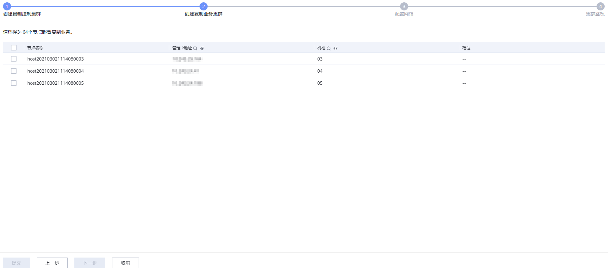
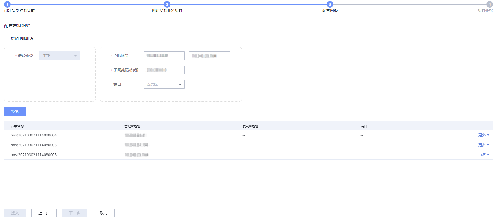

复制集群是由复制节点组成的集群。创建复制集群包括创建复制控制集群、创建复制业务集群、配置复制网络和集群鉴权。您需要在本端和远端存储系统的DeviceManager上分别创建复制集群。
背景信息
复制集群包括复制控制集群和复制业务集群。
- 复制控制集群：用于管理集群节点和集群元数据，支持3、5、7、9个节点。具体规则如下：
- 集群规模为3~4节点：3个节点
- 集群规模为5~6节点：5个节点
- 集群规模为7~32节点：7个节点
- 集群规模为33节点及以上：9个节点
- 复制控制集群最多可配置9个节点，支持最多故障4个复制控制集群节点，提高了复制控制集群的可靠性。
- 复制业务集群：用于远程复制Pair管理操作，支持3~64个节点。
注意事项
请确保远端存储系统的DeviceManager版本不低于本端存储系统的DeviceManager版本，否则将导致复制失败。
操作步骤
- 依次登录本端存储系统和远端存储系统的DeviceManager管理界面。
- 选择。
- 单击“创建”。
系统进入“创建复制集群”向导页面。
- 创建复制控制集群。
支持以“推荐”和“自定义”两种模式创建复制控制集群。
当可用节点数>=3且所有节点的元数据存储方式为物理硬盘或系统盘分区方式时，才支持“推荐”模式。其他情景，仅支持“自定义”模式。
- 推荐创建
- 设置集群名称。

- 长度范围是1到31个字符。
- 控制集群名称只能包含字母、数字、“_”、“-”和中文。
- 在“已选节点”中查看节点配置情况。
- 单击“提交”。
- 待配置成功后，单击“下一步”。
- 设置集群名称。
- 自定义创建
- 设置控制集群名称。
- 长度范围是1到31个字符。
- 控制集群名称只能包含字母、数字、“_”、“-”和中文。
- 选择元数据存储方式和位置。
- 元数据盘需大于105GB。
- 如果使用系统盘分区作为复制业务元数据盘，需要系统盘满足以下条件：
- 当本端存储池的数量 ≤ 4时，系统盘为“SAS盘”或“SSD盘”。
- 当本端存储池的数量 ＞4时，系统盘为“SSD盘”。
- 物理硬盘：选择“物理硬盘”后，需指定部署元数据的硬盘类型和硬盘选择模式。
硬盘类型包括：“SAS盘”、“SATA盘”、“SSD卡&NVMe SSD”、“SSD盘”和“M.2 SSD盘”。当选择“SSD卡&NVMe SSD”和“M.2 SSD盘”时，不能通过“指定槽位”选择硬盘。
硬盘选择模式包括：
- 指定槽位：输入槽位编号。指定槽位取值范围为0到60。
- 手动选择：需为每个节点手动选择硬盘。
- 系统盘分区：选择“系统盘分区”后，系统将使用系统盘的“/opt/ccdb_disk2”分区存放元数据。
- 自定义：支持物理硬盘和系统盘分区混合选择。当需要为不同节点选择不同的元数据存储方式时使用该方式。
- 选择创建控制集群的节点。
- 当元数据存储方式为物理硬盘时，在“可选节点”中选择用于创建控制集群的节点和硬盘。
- 当元数据存储方式为系统盘分区时，在“可选节点”中选择用于创建控制集群的节点。
- 单击“提交”。
- 待配置成功后，单击“下一步”。
- 设置控制集群名称。
- 推荐创建
- 创建复制业务集群。

- 选择部署业务集群的节点。
- 单击“提交”。
- 待创建成功后，单击“下一步”。
- 配置网络。

- 配置复制节点的网络信息，相关参数配置如表2所示。
表2 复制节点的网络信息参数 参数名称
参数说明
传输协议
复制网络的传输协议。
IP地址段
复制网络的IP地址段。
说明：- 复制IP地址不支持与其他网络平面的IP地址共用。
- 复制网络不支持与其他网络使用同一子网。
子网掩码/前缀
- 当IP地址为IPv4时，为复制IP地址的子网掩码，标识IP地址所属的子网。
- 当IP地址为IPv6时，为复制IP地址的前缀。
端口
复制网络的端口。说明：- 若在本步骤直接配置复制网络，请务必选择端口。
- 若选择的端口已在该端口的配置文件中提前配置IP地址并且该IP地址在填写的IP地址段内，系统会分配该IP地址作为复制IP。
- 若选择的端口未提前在该端口的配置文件中配置IP地址，系统会从填写的IP地址段内新分配可用的IP地址作为复制IP地址。
- 单击“预览”。
- 单击“提交”。
- 待创建成功后，单击“下一步”。
- 配置复制节点的网络信息，相关参数配置如表2所示。
- 集群鉴权。相关参数信息如表3所示。
- 单击“提交”。